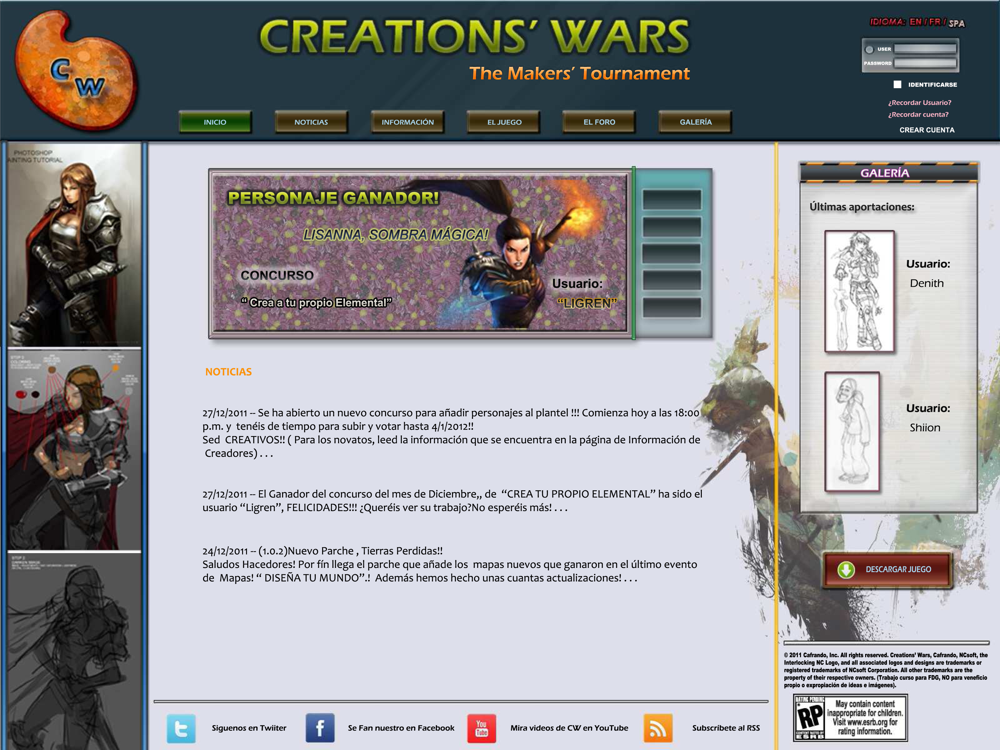
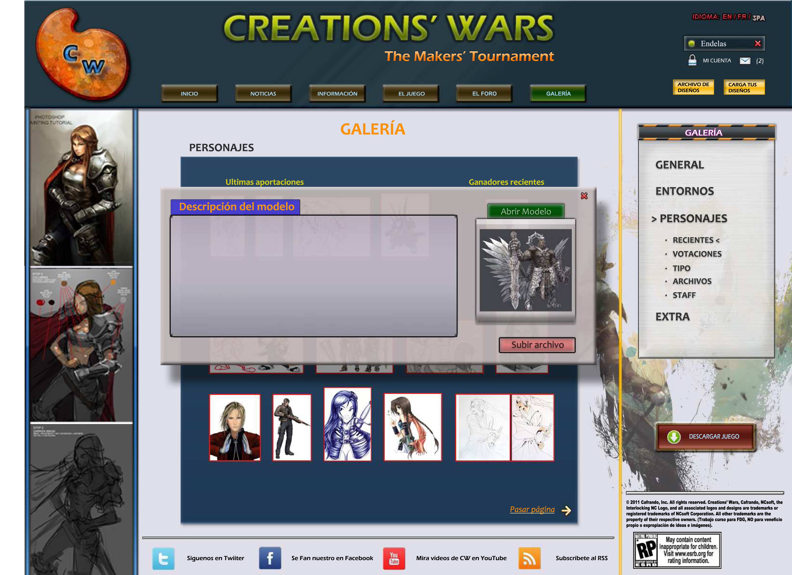
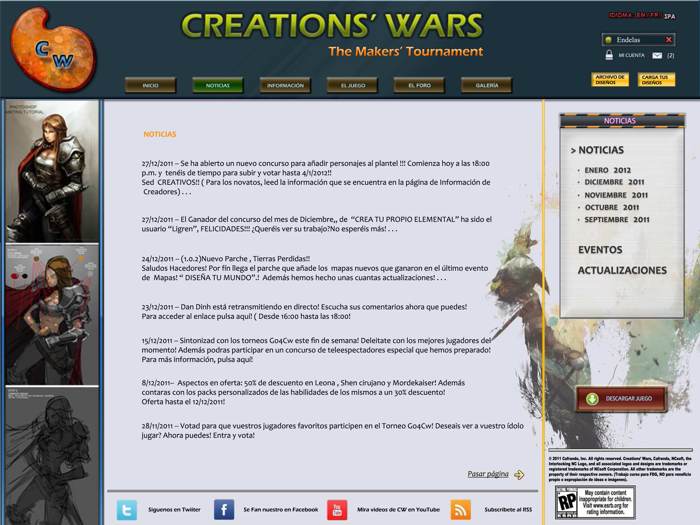

Web design



- Developed with Photoshop
Proyecto desarrollado para la asignatura de Fundamentos del diseño gráfico en Ingeniería Multimedia, Universidad de Alicante.
El trabajo consistía en realizar el diseño y apariencia de una web sobre un proyecto "imaginarío" a elegir. La temática elegida fue la de un videojuego gratuito en el que los propios jugadores podían diseñar y crear sus propios escenarios, personajes y modos de juego, subiendo sus ideas y diseños a la web del proyecto. Además, se tuvo que realizar un video promocional del proyecto en stop motion, que se puede ver a continuación.